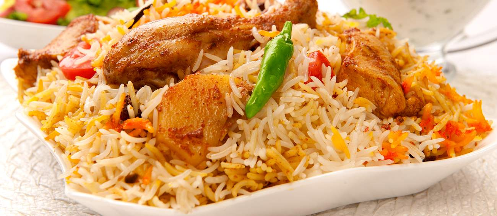
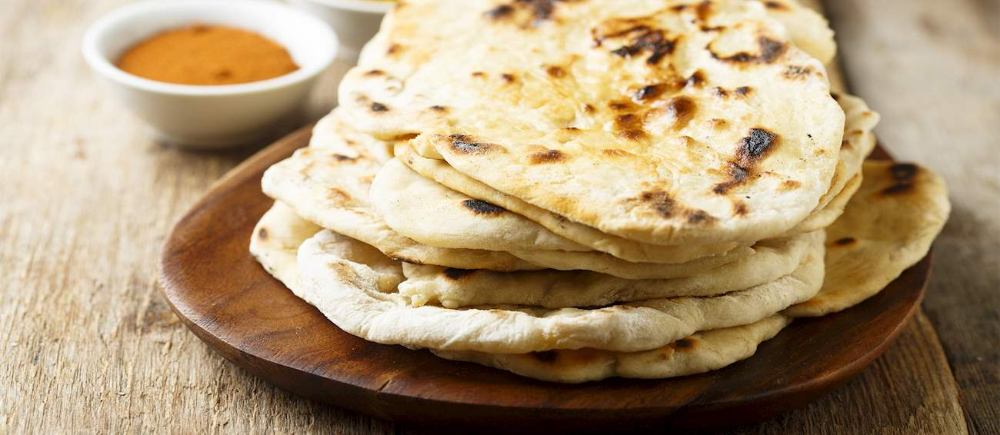

Chilli paneer

Chilli paneer is a traditional Indo-Chinese dish that's served as an appetizer. The dish consists of paneer cheese that's cut into cubes, fried, and mixed with a sweet, sour, and spicy sauce. There are three versions of the dish – dry, semi-dry, and restaurant-style (in gravy).
View RecipeBiriyani
Biryani is a group of classic dishes dating back to the Mughal Empire. The main ingredients of biryani are rice (ideally basmati), spices, a base of meat, eggs, or vegetables, and numerous optional ingredients such as dried fruits, nuts, and yogurt. It is believed that Mumtaz Mahal, Emperor Shah Jahan's queen inspired the dish in the 1600s. The word biryani is derived from the Persian word birian, meaning fried or roasted, and the dish made its way from Persia to India via groups of traders and immigrants.
View RecipeNaan
Naan is a unique and popular flatbread with a chewy texture that has its roots in India. The first documented traces of naan are found in the 1300 AD notes of Amir Kushrau, an Indo-Persian poet. Its name comes from the Persian word for bread. Naan was originally made in two versions at the Imperial Court in Delhi - naan-e-tunuk (light bread) and naan-e-tanuri (baked on the stone walls of a tandoor oven).
View RecipeGulab jamun

Gulab jamun is a dessert based on milk solids that are kneaded into a dough, shaped into balls, and deep-fried in ghee. The balls then get soaked in a sugary concoction flavored with saffron, green cardamom, and rose water. When served, gulab jamun is often garnished with dried nuts to further enhance its flavors. The name of the dish is derived from two words: gulab, meaning rose, and jamun, referring to the purple-colored jamun berry fruit. It is believed that the dessert originated from an Arabic dessert called luqmat al-qadi, which became popular during the Mughal era, when Indian cooks at the palace kitchens adapted their cuisine by combining the newly arrived Persian ingredients with their own Hindu flavors. Nowadays, gulab jamun is often prepared for weddings and during the Diwali festival, both in India and in Trinidad and Tobago, where gulab jamun is also quite popular.
View RecipeSweet Lassi

As the name suggests, this lassi variety is sweetened. Along with sugar, it incorporates yogurt (curd) and usually some fruit or flavorings such as saffron or cardamom. Sweet lassi is often enjoyed after a meal or simply as a refreshing drink that is especially popular during warm summer days. Lassi is traditionally prepared in clay pots. It is often topped with a dollop of thick cream (malai), and sweet varieties are commonly garnished with slivered nuts. There are many sweet lassi variations, and apart from traditional versions, mango lassi recently grew into one of the favorites.
View Recipe